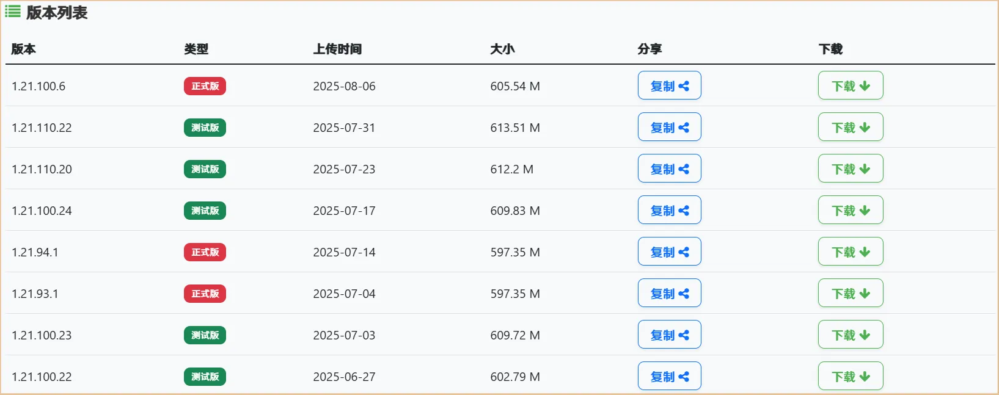
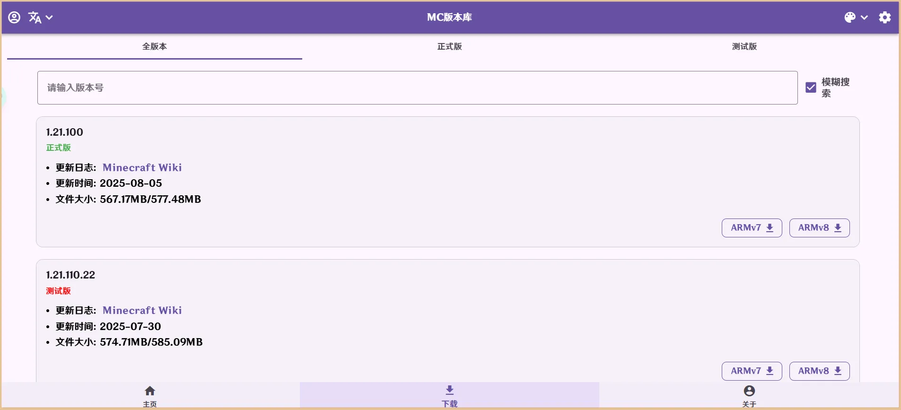
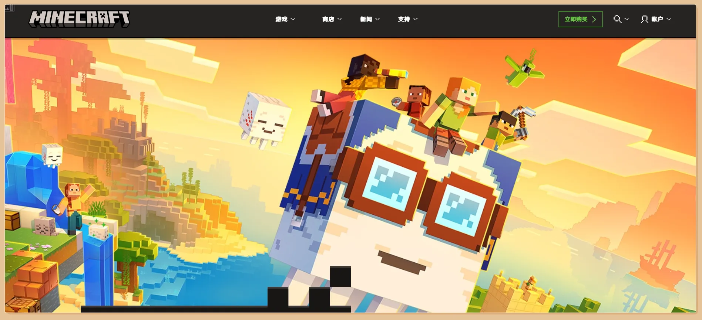
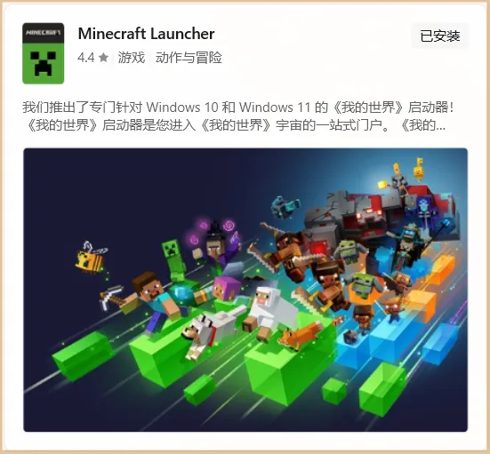
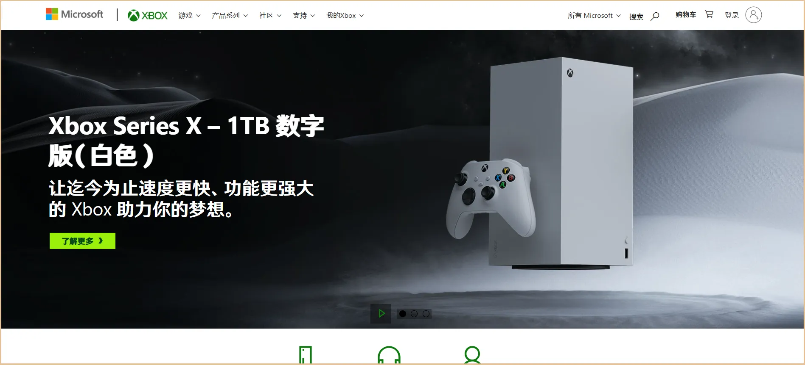

点击目录中的章节列表即可快速定位，要搜索内容，请按 Ctrl + F 。
要下载正版游戏，您需要拥有特殊网络环境并访问 Google Play 商店，在里面花费 US$6.99 来购买并下载。
点击此处访问 Google Play 商店购买 Minecraft 页。
对于中国大陆用户，您可以前往苦力怕论坛或 MC 版本库下载最新正式版 Minecraft
的 APK 安装包。
1 访问苦力怕论坛
2 选择一个最新的版本（建议选择正式版），点击右侧的下载按钮

1 访问MC
版本库
2 选择一个最新的版本（建议选择正式版），点击右侧的 ARMv8 按钮

您需要切换设备地区到 USA ，拥有特殊网络环境、注册美区 APPLE ID 并访问 App Store，在里面花费 US$6.99 来购买并下载。
点击此处访问 App Store 购买 Minecraft 页。
1 在 Minecraft 国际版官网登录您的 Microsoft
账户（如果没有，请在线注册）。
2 登录完成，回到官网，点击右上角的立即购买按钮，点击 Minecraft 后选
PC/MAC/LINUX 再选标准 PC
版，最后点击下方的立即购买来完成购买。

如提示你所在地区尚未推出或不想购买，请参考 IceLake 的博客。
之后，打开文件管理应用，转到 /storage/emulated/0/Download/ 或 /sdcard/Download/ 目录，找到文件名为 X.X.X.X_v8a.apk （X为版本号）的文件，打开安装即可。
如安装时出现错误，请参考下表进行排查：
| 错误提示 | 解决方法 |
|---|---|
| 应用未安装 | 请检查您的手机是否开启了允许安装未知来源应用的权限。 |
| 解析时出错 | 请确保您下载的安装包完整无损，建议重新下载。 |
| 签名不一致 | 该问题由于您安装了来自不同渠道的应用导致签名不一致，请卸载之前安装的应用后重试。 |
| 此应用与您的设备不兼容 | 请检查您是否下载了错误的版本，通常在下载时，要下载 ARMv8 版本，而不是
ARMv7 版本。 如果您设备的 Android 版本低于 Android 6.0 则无法安装，请升级您的设备或下载并尝试安装 ARMv7 版本。 |
App store 会协助您完成安装，稍后可以在桌面找到游戏。
快捷打开
1 打开 Microsoft Store ，在搜索栏中键入 Minecraft Launcher ，找到 Minecraft Launcher 并安装，安装完成后打开。

1 访问 Xbox 官网
2 点击右上角的登录按钮

这样，您就完成了 Xbox 账号的注册和设置。
启动游戏时，直接使用设置的 Xbox 账号登入即可！
Copyright 2025© zxaBinbina
网站框架由 EQAD Network 友情提供